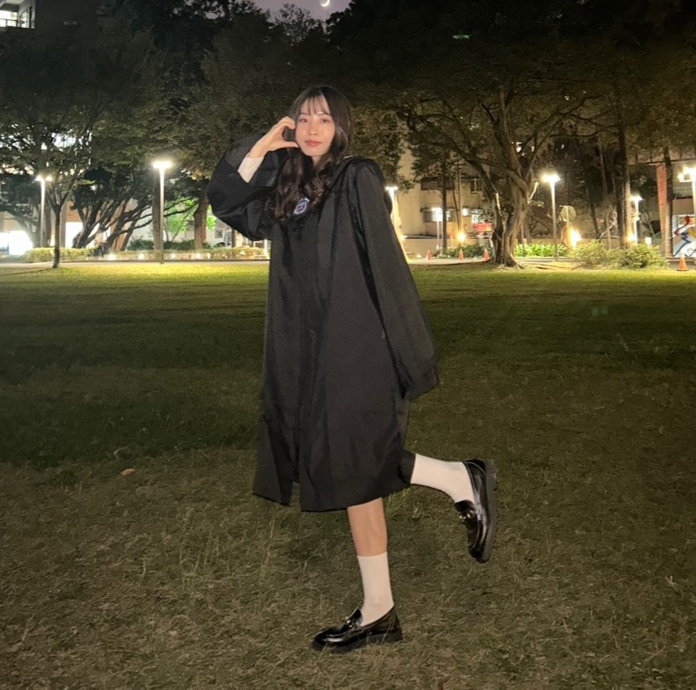
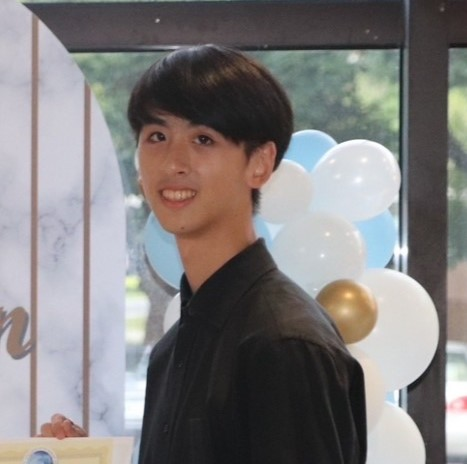
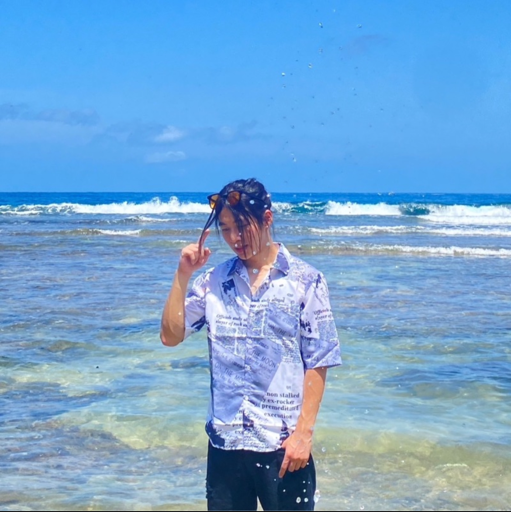
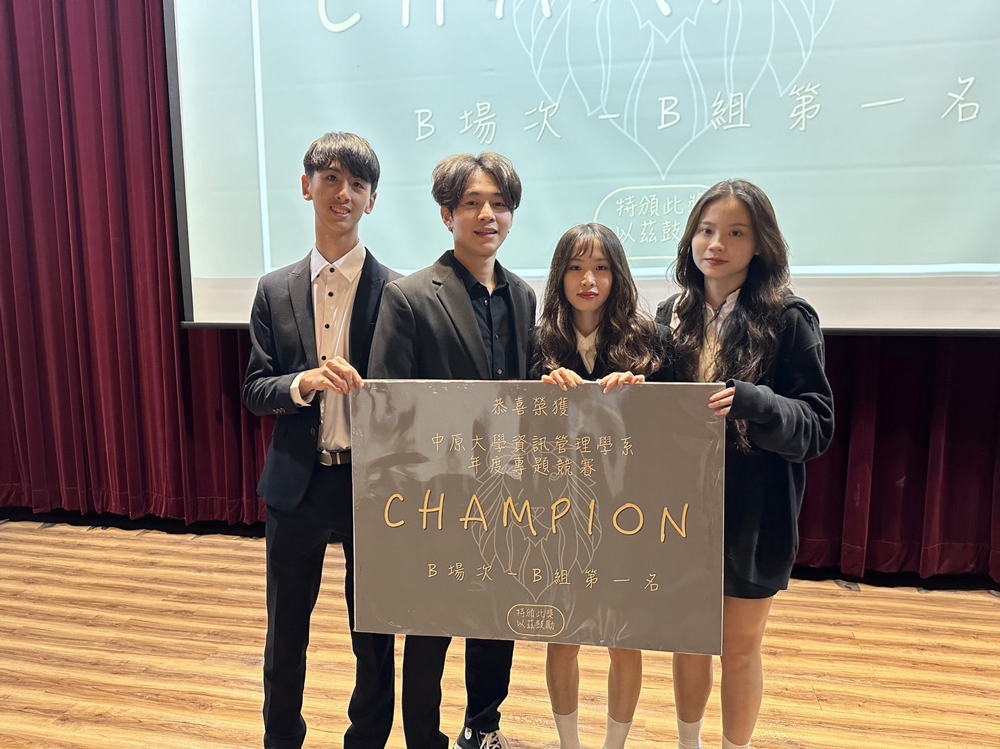

10944104 資管四甲
徐心慧
HSU, HSIN-HUI
出國交換
臺科資管 正取
臺科資管 正取
專題發言人
報告大師
前 系籃球經
特殊技能：比賽前感冒機率90%
10944204 資管四乙
林庭妤
LIN, TING-YU
繼續健身
中信實習 錄取
中信實習 錄取
文書負責人
CANVA大師
前 系排隊長
特殊技能：路上被搭訕機率75%

10944205 資管四乙
吳孟軒
WU, MENG-HSUAN
預計留學
兵種抽籤 陸軍
兵種抽籤 陸軍
前端工程師
剪輯大師
前 系排副隊
特殊技能：電腦斷線機率50%

10944250 資管四乙
陳品叡
CHEN, PIN-JUI
準備結婚
中興資管 正取
中興資管 正取
後端工程師
手相大師
前 系籃隊長
特殊技能：和評審聊天機率100%
×
透過這次的專題，我收穫良多，非常感謝老師的指導，也非常感謝組員的的高效配合，整個專題的過程中，我深深體會到了解決問題能力的重要性，遇到問題時，需有分析、解決問題的能力（此處給問答時間的品叡一個崇高的respect），以減少專案進行中的延誤，並提高整體的工作效能。
專題心得
透過這次的專題，我收穫良多，非常感謝老師的指導，也非常感謝組員的的高效配合，整個專題的過程中，我深深體會到了解決問題能力的重要性，遇到問題時，需有分析、解決問題的能力（此處給問答時間的品叡一個崇高的respect），以減少專案進行中的延誤，並提高整體的工作效能。
整個專題從開始到結束，有遇到挫折的時候（例如被專題指導教授放鳥、DEMO到一半網路炸裂），也有覺得很焦慮的瞬間，但所幸最後有個好的結尾，不枉費每個晚上10點的會議、品叡爆肝寫出來的程式、孟軒手刻的前端跟一幀一幀剪出的影片、庭妤跟我一字一字敲出的書面，還有我報告前充滿血味的喉嚨。很感謝大家陪著我這個焦慮症玻璃心外加體弱多病（比賽前肯定感冒）一起成長，在我焦慮到要崩潰的時候，用自己的方式幫我加油、替我減壓。
最後一段要假裝自己是文藝青年！何其幸運，遇到大家，最後祝我們，步履不停，前程似錦，不負光陰，不負自己！最最最後提醒大家demo前要去買包乖乖，親測有效。
×
我們一開始遇到的難題是：原指導老師跑走啦!! 一夕之間變專題孤兒，幸好國誠收了我們…。
專題心得
我們一開始遇到的難題是：原指導老師跑走啦!! 一夕之間變專題孤兒，幸好國誠收了我們…。
起初最難的部分就想專題題目，我們大概花了兩三週的時間在想題目，每想一個就被打槍，不過經過多次討論和修改，最後終於想到讓老師感興趣的主題，當下我們四個真得痛哭流涕。
準備專題的期間，品叡不知道連續幾小時沒睡，爆肝寫程式，孟軒也是不斷修改前端，而我跟心慧每次都在半夜爆寫爆改書面，資管203成了我們半夜約會地，也很感謝他們配合我下班時間，每次都是約晚上10點開會，每次都是狼狽、疲憊不堪的回家，這種難忘的回憶怎麼忘得了。
而我們參加了不少比賽，但總是無法取得好成績，專題的技術不斷遭到質疑，這讓我們的自信心和動力大受打擊。不過最後在老師的鼓勵下還是參加全國競賽，就在比賽前我們密集的開會討論…慶幸的是在「2023第28屆大專校院資訊應用服務創新競賽」中獲得佳作，雖然只是個佳作，我們幾乎激動得流下淚來。這不僅是對我們努力的肯定，更是對我們自我價值的重建。隨後，在系上的專題競賽中獲得第一名，這個成果更是對我們團隊合作和堅持不懈的最佳證明。這樣一路上跌跌撞撞，但最後還是開花結果，這個結局我們都相當滿意~
最後就大四專題安全下莊啦~ 億個人的小宇宙下台一鞠躬。
×
整個專題的過程庭妤差不多說完了，品叡也把大家的工作表現敘述得淋漓盡致，心慧也把對大家的未來期許講完，所以我好像沒剩什麼能講了（喂
專題心得
整個專題的過程庭妤差不多說完了，品叡也把大家的工作表現敘述得淋漓盡致，心慧也把對大家的未來期許講完，所以我好像沒剩什麼能講了（喂
好啦還是簡單用我的話來說說，在分工的部份大家各司其職，各自都負責自己比較擅長的事，但在需要時也能互相協助，雖然我覺得品叡原先找我應該是打算要一起弄後端的，但後來發現他自己弄快多了直接放棄讓我動手，只能說他老哥實在太猛，要什麼功能都能熬夜隔天馬上做出來，還好這次有不少影片要剪不然我的工作量感覺偏少（差點變躺分仔）；心慧在報告表現上一直都很好，雖然常常比賽前感冒，但仍然能拿出最好的表現擔當團隊的門面，尤其在金融講堂戰力直接加100；庭妤一直以來都是很靠得住的工作伙伴，這次專題也擔任團隊的穩定因子，總是在工作到十點後還來開會，也總會在每個人有需要時最先提出協助。
雖然歷經波折，但最後有冠軍收尾也是相當圓滿了，謝謝大家一路相挺不離不棄（？），預祝畢業快樂，不管在哪裡都能帶著億個人的小宇宙的精神（有這東西嗎？）前行。
（然後這個網頁也在我寫完心得後正式完成，在繳交的前一天壓線收工，可喜可賀）
×
專題心得
心得一向不是我擅長的東西，之前好像都是庭妤幫我寫的，文筆不怎麼好所以只能在螢幕前打程式，先謝謝孟軒的網頁，當你看到這篇心得的時候一定是看到孟軒好看的前端和一堆他剪出來的高品質影片，不得不說前端的網頁是真的都很好看，在整個專題中我只需要解決技術的問題，不管把整個網頁做得多醜最後丟給他都能妙手回春。接著是心慧，這個女人實在太狠了，想到當初來找我們一組的時候我還在想她會不會一言不合炸給我看，事實證明心慧有兩把大刷子，哪個報告人可以像她一樣把我們的宇宙整個透徹的看清楚，每次聽報告都像聽睡前故事，每個比賽順便依著她的美貌晉級大家可是有目共睹阿。最後是庭妤姐，唯一一個在我講屎的時候會每次都捧場的人，每次開會都不會提出太多的想法，但其實比誰都在乎比誰都關心我們，一個字一個字敲出我們的文書檔，在每次我呼呼大睡的時候準時叫我起，默默地在背後凝聚整組的大家，還得是你啊。最後最後國誠老師，謝謝您給我們一堆超有用的意見，您就是我們宇宙中的一抹光束，感謝您的指導，我的＂億個人的小宇宙＂謝謝大家的幫助與關心，在最後依舊譜上最完整的冠軍休止符。
×
啊我胡啦！字一色門清一摸三連三拉三雙一花豹子
